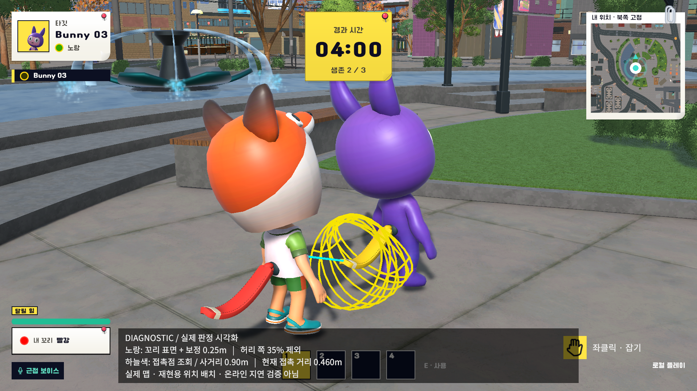
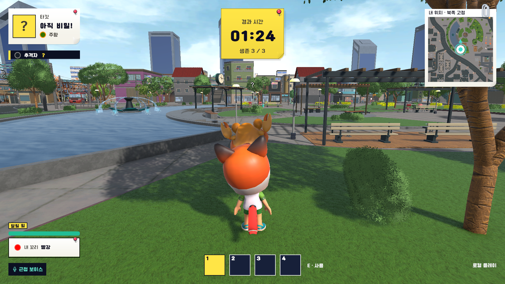
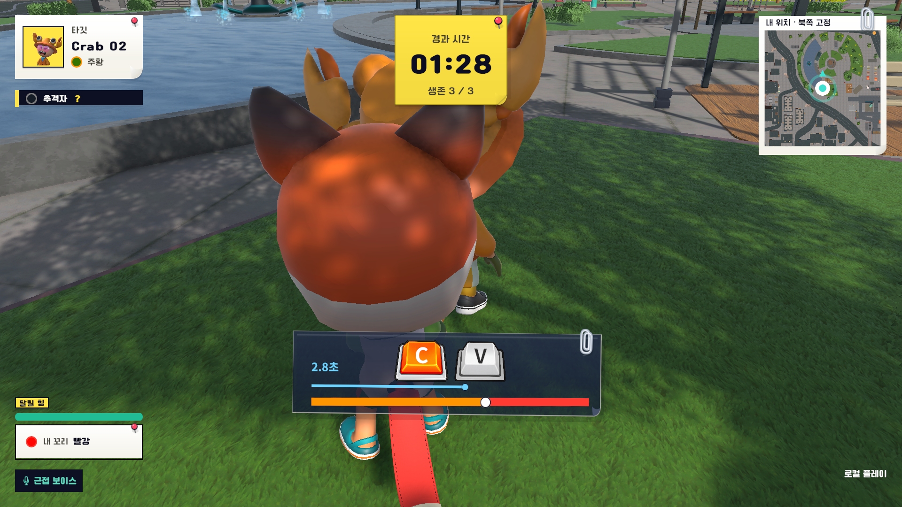

AI 검증 결과 보고서 WHO’S TAIL / 검증 범위와 결과
꼬리 잡기 판정 검증 기획한 조건에서 대결이 시작되는지 확인하도록 요청하고, AI의 실행 결과를 대조했습니다.
검증 목적 거리·방향·이동 상태에 따른 대결 진입과 제한 조건의 미진입을 확인하고자 했습니다. 한 번의 성공 화면보다 조건별 반복 결과 를 판단 근거로 삼았습니다.
제가 AI에 요청한 내용 두 캐릭터 의 거리·방향·걷기·달리기·제한 상태별 반복 테스트와 로그·화면 기록을 요청했습니다. 잡기 접수와 대결 진입을 구분하고 실제 이동 속도도 확인하도록 했습니다.
01 / AI 수행 방법과 조건별 결과 AI는 두 캐릭터 × 조건별 2회 실행과 기록을 자동화했습니다. 실제 판정 코드를 쓰는 격리 테스트와 오프라인 맵의 자동 입력을 실행하고, Orca에서 독립 검토를 나눠 규칙·로그·화면을 대조했습니다.
표 1. 정지·제한 조건 64회 기대값 일치 / 수정 후 이동 조건 8회 조건과 방법 기대 결과 관찰 결과 D-01 / 20회 접근 거리 접촉 범위 안에서 대결 진입, 범위 밖에서 미진입 앞의 3단계 12회 진입 A-01 / 16회 접근 방향 후방 허용 범위 60° 안팎에서 결과 구분 59° 4회 진입 N-01 / 28회 제한 조건 제한 조건에서 대결 미진입 7개 조건, 각 4회 미진입 M-02 / 재검증 8회 이동 상태 이동 속도가 기록되고 해당 접촉 조건에서 대결 진입 약 3.5 / 6m/s 확인
거리 수치는 시작 시 캐릭터 간 간격이며 꼬리 접촉점까지의 거리나 고정 사거리가 아닙니다. 대결 진입은 대결 승리나 꼬리 탈취 완료를 뜻하지 않습니다. 초기 이동 8건은 위 결과에 포함하지 않았습니다.

그림 1. 재현 위치에 두 캐릭터를 배치한 실제 Unity 캡처. 02 / 판정 근거 확인 노란 선은 꼬리 중심선과 보정 두께의 근사 표시 , 하늘색 선은 판정 기준점에서 접촉점까지의 조회선입니다. 전체 잡기 가능 범위를 뜻하지 않습니다.
꼬리 선분 판정과 두께 보정은 이전 구현이며, 이번 검증에서 변경하지 않았습니다.
실행 로그 · 실제 Unity 캡처 기반 WHO’S TAIL / 01 AI 검증 결과 보고서 WHO’S TAIL / 수정과 결론
이동 입력을 바로잡아, 검증 근거를 확보 게임 판정은 유지하고, 요청한 이동 조건이 실제로 수행되는지 재검증했습니다.
요청한 걷기·달리기 조건 충족률 0% → 100% +100%p
수정 전 0/8회 → 수정 후 8/8회. 두 캐릭터의 입력·접촉 표본 속도가 요청값의 ±1% 이내인 사례 비율입니다. 대결 진입은 전후 모두 8/8로, 제품 정확도 개선율이 아닙니다.
03 / 테스트 입력 오류 → 수정 → 재검증 초기 8회 · 제외 이동 조건 입증 불가 대결은 시작됐지만 두 캐릭터의 PlanarSpeed는 모두 0이었습니다. 잡기 모션의 슬라이드만으로 걷기·달리기 수행을 입증할 수 없어 제외했습니다.
테스트 코드 수정 입력 공급 시점 변경 입력 공급을 에디터 갱신에서 Unity 입력 처리 직후(InputSystem.onAfterUpdate)로 옮겨, 입력 시점의 불일치를 바로잡았습니다.
재검증 8회 · 채택 실제 이동 속도 확인 같은 캐릭터·초기 간격·걷기 및 달리기 조건으로 실행했습니다. 약 3.5 / 6m/s, 위치 변화와 대결 진입 8회를 확인했습니다.
결론: 판정 유지, 테스트 유효성 보완 정지·제한 조건 64회는 기대값과 일치 했고, 수정 후 이동 8회는 실제 속도와 대결 진입을 함께 확인 했습니다. 검사 범위에서 새 판정 오류가 재현되지 않아 사거리와 두께 보정값을 유지했습니다.
게임 코드·씬·기획 수치는 유지했습니다. 보완한 입력·준비 절차 는 향후 반복 점검에 활용할 수 있습니다.
04 / 실제 맵의 입력과 화면 대조 상대와 간격을 설정하고 잡기 준비를 기다린 뒤 마우스 입력을 자동 전달했습니다. 대결 진입 후에는 C, V, C, V를 입력했습니다.

그림 2. 간격 2.1m: 잡기 입력 후 대결 미진입. 실행 로그와 함께 확인했습니다. 
그림 3. 간격 0.9m: 대결 진입. C/V 입력 4회가 처리됐고 입력마다 게이지가 같은 폭으로 이동했습니다. 보조 지표 / 입력 전 준비 상태의 재현성 8.54m → 0.12m 로 줄었습니다(4조건, 전후 각 20회). 입력 시점 판정 원점–꼬리 거리의 최댓값−최솟값이며, 접촉 순간의 동일성이나 판정 성공률을 뜻하지 않습니다.05 / 확인 범위와 남은 검증 확인 범위: 로컬 자동 테스트·오프라인 연습 모드. 상대속도가 있는 추격, 온라인 지연·다중 PC Shared, 직접 플레이의 조작감·재미는 미검증입니다.
경계 실험의 판정 직전 표본은 실제 접촉 순간과 달라, 성공률·완전 동일조건 반복 근거에서 제외했습니다.
실행 로그 · 실제 Unity 캡처 기반 WHO’S TAIL / 02